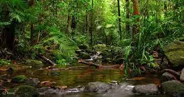

WILD
Sri lanka of just under 66,000 square kilometers is unusual. Contray to expectins of island bio-geographic theory, it has large mammls.
It is the best place in Asia to see the asian elephants.
Sri Lanka also have another eco-tourismtrump card,he leopard.Yala National Park has one of thr highest densites of
leopard anywhere in the world.
Sri lanka is one of the best place to see beauty of nature.
Sinharaja
Sinharaja comparisise of lowland and sub-montane wer evergreen firest with sub-montane Patana grasslands in the east. Sinharaja is arguably the most important biodiversity site in Sri Lanka.The lowerslopes and valleys have remnant Dipterocapus forest with the middle and higher chracterised by trees of the genus Mesua. Half of Sri Lnakan's endamic mamals and birds are foud here.
| Name of Spesific Animal/Plant | Images | Habitats | Features |
|---|---|---|---|
GREEN PIT VIPER |
eat wild animals | green color | |
Katussa |
eat small ants | can chane color | |
SRI LANKA BLUE MAGPIE |
cn fly | eat small ants |
Yala National Park
that brings you up, close and personal with untamed world of wildlife. Whether you are an avid nature lover or visiting a wildlife park for the first time, if you come here with a mind that’s eager to explore and learn, you will go away with new-found meaning to life.
| Name Spesific animal/plant | Images | Habitats | Features |
|---|---|---|---|
LEOPARD |
eat wild animals | green color | |
ELEPHANT |
eat small ants | can chane color | |
PETITE BLUE TAILED BEE EATER |
cn fly | eat small ants |
Horton Plains National Park

To see the end of the world, you need to get up early. So it’s before dawn that I get up and go to find the jeep that will take me to Horton Plains National Park. Walking deep into the park, I will find ‘The World’s End’, the high clifftop with a view all the way across this island country to the shore and beyond. But if you’re not there by about 9 o’clock in the morning, you will miss it. Every day a huge blanket of mist folds over the vista and covers it for the rest of daylight hours.
| Name Spesific Animal/Plant | Images | Habitats | Features |
|---|---|---|---|
Snake |
eat wild animals | green color | |
Katussa |
eat small ants | can chane color | |
bird |
cn fly | eat small ants |